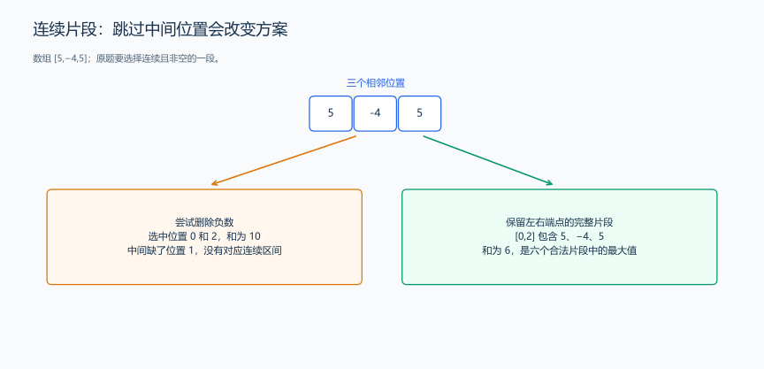
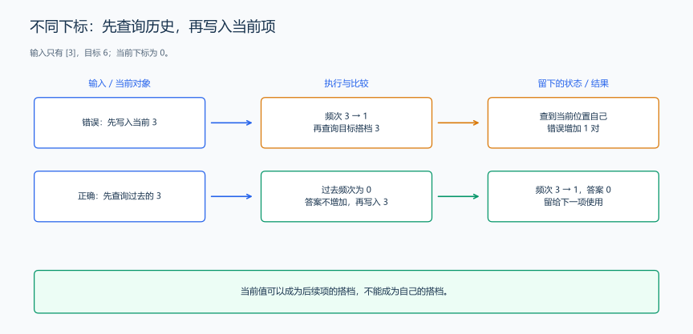
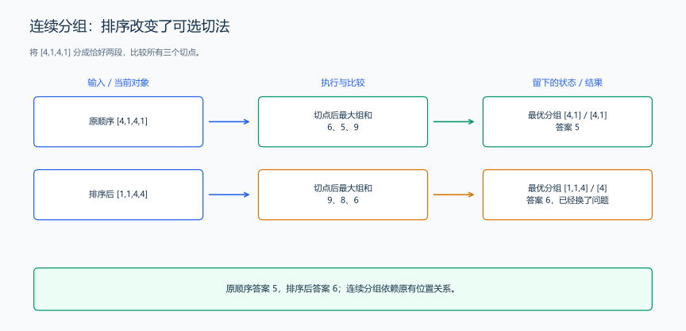
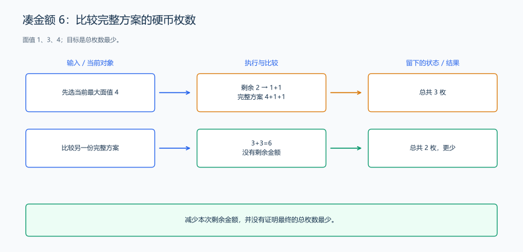

（九） 建模与推导中的典型反例
程序可以正确执行每一行，却仍然回答了另一道题。检查模型时，先把它允许的方案与题目允许的方案放在一起，找出被多算、漏算或改写的部分。
1. 连续片段被改成任意选择
题目原文（自拟）： 数组为 [5,-4,5]。选择连续且非空的一段，输出最大的区间和。程序无需输入。
看到负数就删除，会得到 5+5=10。但两个 5 中间隔着 -4，这个选择没有对应的连续区间。错误出在“允许选择哪些位置”，还没有进入算法快慢的比较。
| 连续区间的下标 | 实际选中的数 | 和 |
|---|---|---|
[0,0] |
5 |
5 |
[0,1] |
5,-4 |
1 |
[0,2] |
5,-4,5 |
6 |
[1,1] |
-4 |
-4 |
[1,2] |
-4,5 |
1 |
[2,2] |
5 |
5 |

用两个端点描述一个连续片段，就不会把中间位置跳过去。固定左端点后，让右端点逐个增加，每次把新元素加入当前和。
#include <algorithm>
#include <iostream>
#include <vector>
using namespace std;
int main() {
vector<int> a{5, -4, 5};
int answer = a[0]; // 从一个非空片段开始记录答案。
for (int left = 0; left < static_cast<int>(a.size()); ++left) {
int sum = 0;
for (int right = left; right < static_cast<int>(a.size()); ++right) {
sum += a[right]; // 此时 sum 是 a[left..right] 的和。
answer = max(answer, sum);
}
}
cout << answer << '\n'; // 6，对应整个数组。
}代码解释： 每个连续非空片段有唯一的一对左右端点，两个循环恰好检查全部片段。推广到长度 n 时，检查次数为 n+(n-1)+…+1，时间为 \(O(n^2)\)，额外空间为 \(O(1)\)。后面的线性 DP 会继续优化同一个模型。
练习： 洛谷 P1115 — 最大子段和（学习线性 DP 后完成）。
2. 两个下标被误写成两次取值
题目原文（自拟）： 数组为 [3]，统计满足 i<j 且 a[i]+a[j]=6 的下标对数量。程序无需输入。
“数组里有 3，另一个 3 也能找到”会让同一个位置参与两次。题目需要两个不同的位置；这个数组只有一个位置，所以答案是 0。

#include <iostream>
#include <vector>
using namespace std;
int main() {
vector<int> a{3};
int count = 0;
for (int i = 0; i < static_cast<int>(a.size()); ++i) {
// j 从 i+1 开始，同一位置不会出现，也不会反向重复统计。
for (int j = i + 1; j < static_cast<int>(a.size()); ++j) {
if (a[i] + a[j] == 6) {
++count;
}
}
}
cout << count << '\n'; // 0，内层循环没有候选位置。
}代码解释： 值相同与位置相同是两件事。[3,3] 有一个合法下标对，[3,3,3] 有三个。枚举长度 n 的数组需要 \(O(n^2)\) 时间、\(O(1)\) 额外空间；后面的一题多模型会保留同一个下标要求，再减少检查次数。
3. 排序改变了不能重排的对象
题目原文（自拟）： 四个任务的工作量依次为 [4,1,4,1]。按给定顺序切成恰好两个连续非空组，输出最大组内工作量的最小值。程序无需输入。
为了让大小相近的数放在一起而先排序，会把任务顺序改成 [1,1,4,4]。两个数组的可选切法不同：
| 切点 | 原顺序的两组与较大组和 | 排序后的两组与较大组和 |
|---|---|---|
| 第 1 项后 | [4]、[1,4,1]：6 |
[1]、[1,4,4]：9 |
| 第 2 项后 | [4,1]、[4,1]：5 |
[1,1]、[4,4]：8 |
| 第 3 项后 | [4,1,4]、[1]：9 |
[1,1,4]、[4]：6 |

排序后的最优值 6 不能回答原题。原题只需枚举三个切点，得到答案 5。
#include <algorithm>
#include <iostream>
#include <vector>
using namespace std;
int bestSplit(const vector<int> &a) {
int total = 0;
for (int x : a) {
total += x;
}
int leftSum = 0;
int answer = total;
for (int cut = 1; cut < static_cast<int>(a.size()); ++cut) {
leftSum += a[cut - 1]; // 切点前的数保持原顺序，构成第一组。
answer = min(answer, max(leftSum, total - leftSum));
}
return answer;
}
int main() {
vector<int> a{4, 1, 4, 1};
cout << bestSplit(a) << '\n'; // 5，是原题的答案。
sort(a.begin(), a.end());
cout << bestSplit(a) << '\n'; // 6，展示重排后变成了另一道问题。
}代码解释： 选定切点后，左组和为 leftSum，右组和为 total-leftSum。逐个比较较大的组和，再取最小值。一次分组计算需要 \(O(n)\) 时间、\(O(1)\) 额外空间；示例中的排序用来展示模型被改变的结果。
练习： 洛谷 P1182 — 数列分段 Section II（学过二分答案后完成）。
4. 当前收益被当成全局最优
题目原文（自拟）： 面值为 1、3、4 的硬币各有足够多枚。凑出金额 6，输出最少硬币数。程序无需输入。
“先拿最大面值”得到 4+1+1，需要三枚；3+3 只需两枚。选择最大硬币确实让本次剩余金额减少最多，但题目的目标是所有选择结束后的总枚数。
| 4 元枚数 | 3 元枚数 | 1 元枚数 | 总枚数 |
|---|---|---|---|
| 0 | 0 | 6 | 6 |
| 0 | 1 | 3 | 4 |
| 0 | 2 | 0 | 2 |
| 1 | 0 | 2 | 3 |

先写清模型：枚数 x、y、z 是非负整数，满足 4*x+3*y+z=6，要最小化 x+y+z。枚举 x、y 后，z 由剩余金额唯一确定。
#include <algorithm>
#include <iostream>
using namespace std;
int main() {
int amount = 6;
int answer = amount; // 全用 1 元硬币是一份可直接写出的方案。
for (int fours = 0; fours * 4 <= amount; ++fours) {
for (int threes = 0; fours * 4 + threes * 3 <= amount; ++threes) {
int ones = amount - fours * 4 - threes * 3;
// 每种面值的数量确定后，计算完整方案的枚数。
answer = min(answer, fours + threes + ones);
}
}
cout << answer << '\n'; // 2，对应两个 3 元硬币。
}代码解释： 一份硬币方案只有一组对应的三种枚数，枚举没有重复。推广到金额 A 时，两个枚数的候选数量随 A 增长，时间为 \(O(A^2)\)，额外空间为 \(O(1)\)。学习完全背包后，可以把重复的剩余金额计算合并起来。
练习： CF 996A — Hit the Lottery（学习贪心后完成）。
前三个反例分别改写了合法位置、对象身份和原有顺序；硬币例题则把本次剩余金额减少最多当成了总枚数最少的理由。出现 WA 时，把失败输入代回这些具体要求，再检查每一步选择的依据。